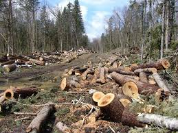

Deforestasi atau Penggundulan hutan adalah adalah kegiatan menebang hutan atau tegakan pohon sehingga lahannya dapat dialihgunakan untuk penggunaan nonhutan, seperti pertanian dan perkebunan, peternakan, atau permukiman.
Deforestasi terjadi karena Hilangnya tutupan lahan secara kuantitatif. Hal ini sangat berhubungan erat dengan aktivitas manusia atau adanya gangguan alam. Diantara bentuk yang sering terjadi yaitu pembukaan area lahan kehutanan yang dikonversi untuk lahan pertanian, penggembalaan, transmigrasi, dan sebagainya.
Angka penebangan hutan yang tinggi setiap tahunnya akan menyebabkan hilangnya lahan hutan secara besar-besaran. Akibat dari kehilangan lahan hutan yang berdampak negatif pada keberlanjutan lingkungan maupun kehidupan sosial.
"Berdasarkan data KLHK per Januari 2024, deforestasi neto Indonesia pada 2021-2022 sebesar 104 ribu hektare"
Akibat dari Penebangan Hutan secara Ilegal Klik Link ini.